Karg's
America 24/7 Photos
These photos were taken for the America 24/7 contest on May 18, 2003. Sunday's theme was "America Worships." I was only permitted to submit seven photos, but here are more of of the pictures that I took that day. I took the photos handheld using a Polaroid PDC 1300 (1.3MegaPixels) digital camera.
America 24/7, currently the largest collaborative photography project in history, was produced by Rick Smolan and David Elliot Cohen. From May 12-18, 2003, nearly 4,000 professional photographers and tens of thousands of amateurs took more than one million digital photographs. Some of photographs (about 1100 per book) will be featured in 53 large-format books (a national volume, plus one on each state, NYC and DC).
| 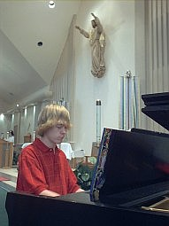 | Tom Fahey, 17, of Conyers, Georgia, plays a piano solo at St. Pius X Catholic Church on Sunday, May 18, 2003. Tom plays piano every Sunday with the Folk Choir at the 8am mass at St. Pius X. [submitted] |
| 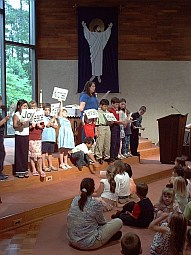 | Children participate teaching the 12 fruit of the Holy Spirit during Liturgy of the Word for Children at St. Pius X Catholic Church in Conyers, Georgia, on May 18, 2003. The children's liturgy is part of the regular 10am Sunday morning mass. [submitted] |
| 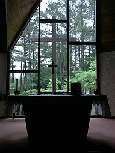 | The day chapel at St. Pius X Catholic Church in Conyers, Georgia, on May 18, 2003. I was fascinated by the simplicity and the sharp lines of the background. |
| 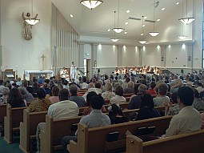 | Regular 10am Sunday morning mass at St. Pius X Catholic Church in Conyers, Georgia, on May 18, 2003. |
| 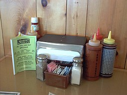 | The condiments on a table at Sonny's Bar-B-Que reminded me of the some of the excesses that America is famous for - a wide selection of condiments, an all you can eat menu option, and Heinz Ketchup. |
| 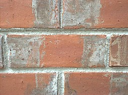 | I snapped a photo of some bricks on my garage. They seemed to have neat pattern to them. |
| I snapped a close-up picture of a holly bush in my yard. It had a neat pattern. | |
| 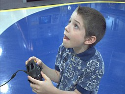 | Joshua Karg, 8, of Conyers, Geogia, evaluates a video game on the X-Box gaming console at Best Buy, an electronics retailer, on May 18, 2003. [submitted] |
| 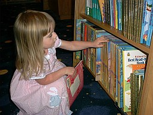 | Anna Rose Karg, 3, of Conyers, Georgia, selects a second book in Border's on May 18, 2003. Anna went to the book store to help her brother find a book for his book report, but found Dr. Seuss and Barbie books much more inviting. [submitted] |
| 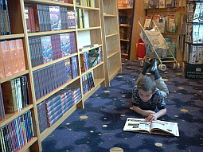 | Joshua Karg, 8, finds an interesting book at Border's by checking out the contents first, on May 18, 2003. Joshua was in search of book for a book report due the following week, but found the Eyewitness series of books much more fascinating. [submitted] |
| 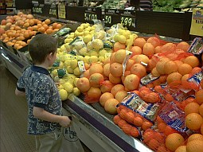 | Joshua Karg, 8, searches for the perfect lemons to make some lemonade on May 18, 2003. Joshua, his sister Anna, and his dad stopped at a Kroger grocery store after church to pick up a few items. |
| 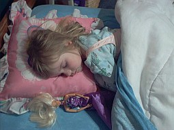 | Anna Rose Karg, 3, sleeps in solitude after a busy day of church, eating out, grocery shopping, book shopping, and of course, playing. She had put on a ballerina outfit over her pajamas as she played with her dolls, and fell asleep. [submitted] |
| 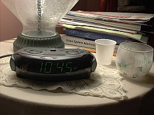 | The contest ended at midnight, but I was tired and wanted to go to bed, so I shot this picture of my night stand. I thought it might typify America at the end of the day - an alarm clock, some inspirational reading, my Linux System Admin book, and some magazines and papers waiting to be read. The lighting turned out nicely too. |
Page created by The Karg Family
Photos Copyright (c) 2003-2004 by The Karg Family
{kind=link}
{kind=link}
{kind=link}
{kind=link}
{kind=link}
{kind=link}
{kind=link}
{kind=link}
{kind=link}
{kind=link}
{kind=link}
{kind=link}
{kind=link}